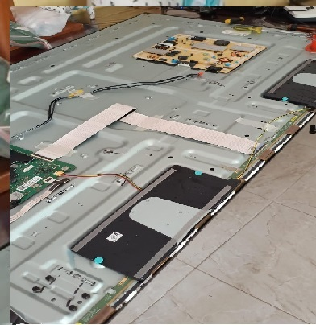
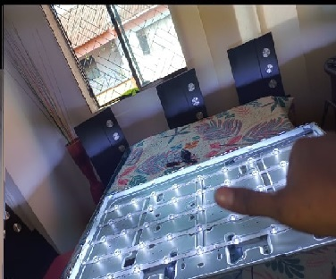
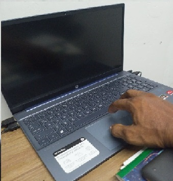
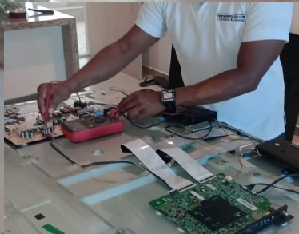

Reparación de televisores
Fallas de imagen, sonido, encendido y conexión en televisores de todas las marcas: fuentes de poder, tarjetas y T-con.
Diagnóstico técnicoValor antes de reparar
Técnico de televisores en Cartagena, Bolívar
Soy César Pestana, técnico con más de 25 años en electrónica. Reparo televisores de todas las marcas, cambio LEDs y arreglo computadores, en tu casa.
Elige lo que ves y te digo la causa más probable y qué puedes probar antes de llamar. Es una orientación: el diagnóstico real se hace con el equipo en la mano.
Empecemos por lo que ves en la pantalla.
Cuando elijas un síntoma verás aquí la causa probable, una prueba sencilla que puedes hacer tú y lo que haría yo en la revisión.

Fallas de imagen, sonido, encendido y conexión en televisores de todas las marcas: fuentes de poder, tarjetas y T-con.
Diagnóstico técnicoValor antes de reparar

Si la imagen se ve oscura o se apaga a los segundos, casi siempre es la luz de fondo. Cambio las tiras y reviso la pantalla al terminar.
A domicilioPrueba final contigo presente

Mantenimiento, revisión de hardware, instalación de programas y optimización para equipos de trabajo o de casa.
Mantenimiento preventivoSoporte de software

Trabajo directo con cada cliente: reviso, te explico la falla en palabras sencillas y solo reparo cuando aceptas el valor. Si un televisor no vale la pena repararlo, te lo digo de frente.
Me cuentas la falla, la marca y, si puedes, mandas una foto. Te respondo con una primera orientación, sin compromiso.
Diagnostico el equipo, te explico qué tiene y cuánto cuesta. No reparo nada sin tu aprobación.
Repongo las piezas, verificamos que todo funcione contigo presente y queda cubierto por 90 días de garantía.
Sí. Reviso y reparo el equipo en tu casa cuando el caso lo permite; si necesita taller, te lo explico antes de llevármelo.
Sí, trabajo con las marcas más comunes. Mándame el modelo por WhatsApp y te confirmo si puedo repararlo.
Depende de la falla y del modelo. Primero reviso, te explico qué tiene y te doy el valor antes de reparar.
Sí, 90 días sobre mano de obra y piezas reemplazadas. No cubre golpes, humedad, variaciones eléctricas ni intervenciones de terceros. Está detallado en los términos y condiciones.
Te lo digo antes de gastar. Un panel roto o con manchas negras por golpe casi nunca es rentable de reparar.
Sí: mantenimiento, revisión de hardware, instalación de programas y optimización.
Escríbeme por WhatsApp y te respondo con un diagnóstico claro y sin compromiso.
Escribir ahora